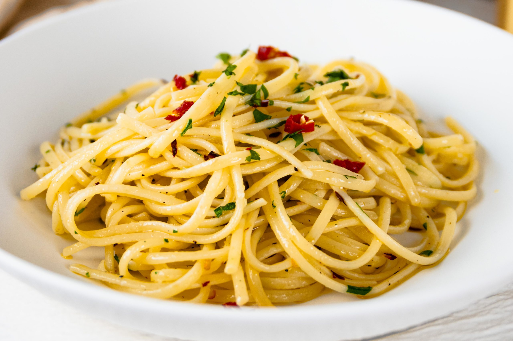

Spaghetti aglio e olio

Description
Spaghetti Aglio e Olio is a classic Italian pasta dish known for its simplicity and bold
flavors. It features
spaghetti tossed in olive oil, garlic, red pepper flakes, and parsley, creating a harmonious blend of savory,
spicy, and aromatic elements.
The garlic is gently sautéed in extra virgin olive oil until golden, releasing its
rich flavor, while the red pepper flakes add a mild heat. Finished with fresh parsley and a sprinkle of Parmesan
or Pecorino cheese (optional), this dish is a quick, comforting meal that highlights the beauty of basic,
high-quality ingredients.
Ingredients
- 1 pound uncooked spaghetti
- ½ cup olive oil
- 6 cloves garlic, thinly sliced
- ¼ teaspoon red pepper flakes, or to taste
- Salt and freshly ground black pepper to taste
- ¼ cup chopped fresh Italian parsley
- 1 cup finely grated Parmigiano-Reggiano cheese
Steps
- Bring a large pot of lightly salted water to a boil. Cook spaghetti in the boiling water,
stirring occasionally until cooked through but firm to the bite, about 10 to 12 minutes.
Drain and transfer to a pasta bowl.
- While the pasta is cooking, combine olive oil and garlic in a cold skillet.
Cook over medium heat to slowly toast garlic, about 10 minutes.
Reduce heat to medium-low when olive oil begins to bubble.
Cook and stir until garlic is golden brown, about another 5 minutes. Remove from heat.
- Stir red pepper flakes, salt, and black pepper into pasta.
Pour in hot olive oil and garlic, and sprinkle on Italian parsley and half of the Parmigiano-Reggiano
cheese;
toss until combined.
- Serve pasta topped with the remaining Parmigiano-Reggiano cheese.
Go home